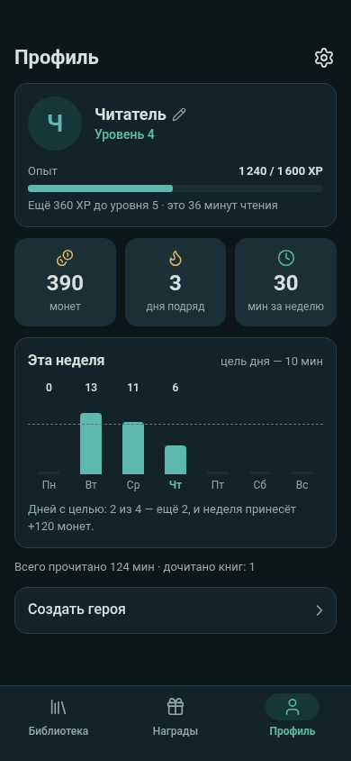
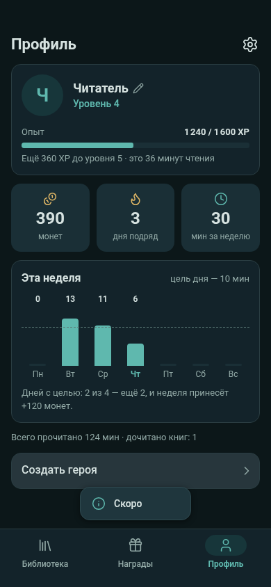
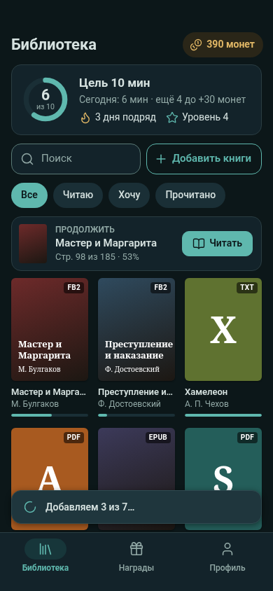
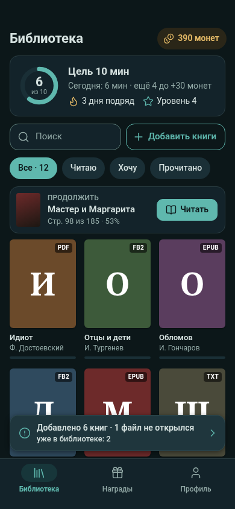
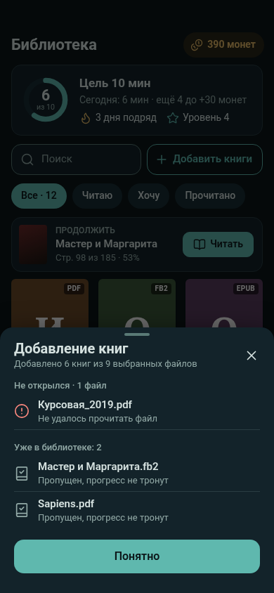
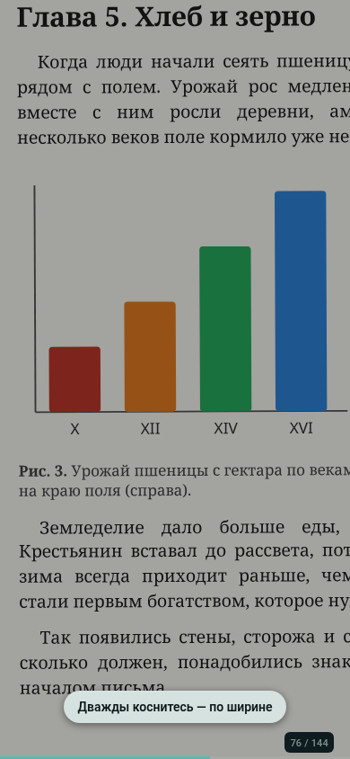
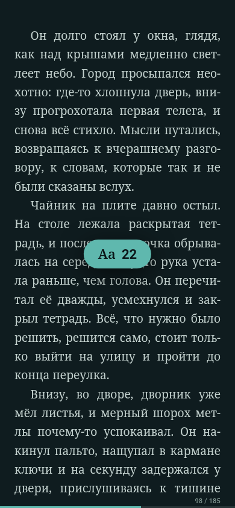
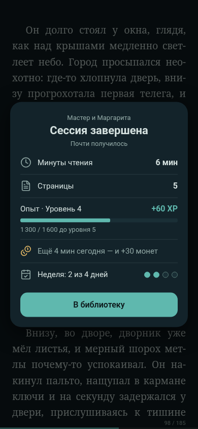
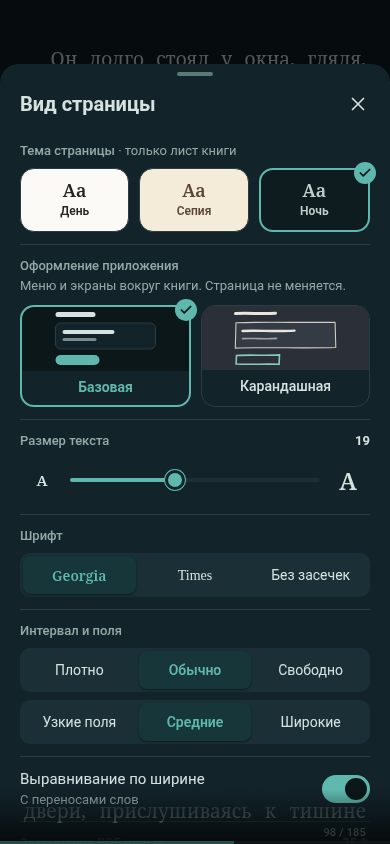

Профиль: «Создать героя» · 1в
последняя строка под статистикой; surface + text, только шеврон
profile-hero-stub-night.png

Профиль: тап по заглушке · 1в
событие hero_create_tapped, тост info «Скоро»
profile-hero-stub-tapped-night.png

Импорт: идёт · 1в
кнопка «Добавить книги» (мультивыбор), тост «Добавляем 3 из 7…»
library-import-progress-night.png

Импорт: итог · 1в
тост по тапу открывает подробности; новые книги первыми
library-import-result-night.png

Импорт: подробности · 1в
что не открылось и почему, дубликаты; «Понятно»
library-import-detail-night.png

PDF ×2 · 1б
верхние 12 % выкл.; подсказка про двойной тап; «76 / 144» из меток PDF
reader-pdf-zoomed-night.png

Пинч шрифта · 1б
плашка «Aa 22» (#pinchHint, --rq-accent); текст пока прежний
reader-pinch-font-night.png

Итог: цель не набрана · 1в
одна спокойная строка с монетами, без кнопки и кольца
summary-daily-not-done-night.png

«Вид страницы» + оформление · 1б
тема страницы отдельно; оформление: Базовая / Карандашная
reader-view-sheet-themes-night.png